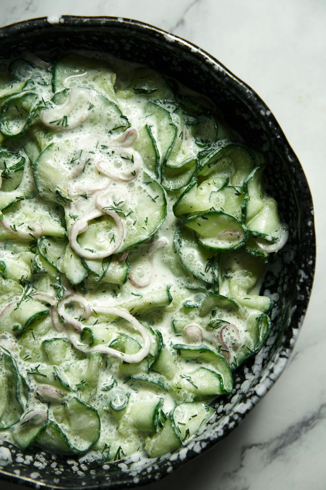

Herbed Yogurt Bowl
Cool garlicky yogurt with cucumber, heaps of herbs and toasted seeds, ready in ten minutes.

A savoury yogurt bowl is one of the fastest lunches possible and one of the most underrated. Thick yogurt seasoned properly with salt, garlic and lemon becomes a base rather than a breakfast, and everything crunchy you scatter on it counts.
Ingredients
Quantities scale automatically. Cooking times stay the same.
Herbed yogurt
Toppings
Equipment
- Mixing bowl
- Small dry pan
Method
-
1
Season the yogurt
Stir the yogurt with the grated garlic, lemon juice and salt. Taste it now: unsalted yogurt tastes like breakfast, properly salted yogurt tastes like a meal.
-
2
Fold in the herbs
Add the dill, mint and chives and fold through, keeping some back for the top. Let it sit 5 minutes so the garlic mellows into the yogurt.
-
3
Toast the seeds
Toast the mixed seeds in a dry pan over medium heat for 3-4 minutes until fragrant, then tip onto a plate to cool.
-
4
Salt the cucumber
Toss the diced cucumber with a small pinch of salt and let it stand 5 minutes, then drain off the liquid that collects.
-
5
Build the bowls
Spread the herbed yogurt across two shallow bowls, making a swoosh with the back of a spoon to hold the toppings.
-
6
Top and finish
Scatter over the cucumber, toasted seeds, reserved herbs and sumac. Finish with a generous pour of olive oil and black pepper, and serve with warm pita.
Cook’s tips
- Use full-fat Greek or strained yogurt. Low-fat versions are too thin and turn watery under toppings.
- Grate the garlic rather than chopping it, so it disperses evenly instead of ambushing one bite.
- Be generous with the olive oil at the end. It is a main ingredient here, not a garnish.
Variations
- Add roasted chickpeas, leftover roast vegetables or a jammy egg for a bigger meal.
- Swap the herbs for coriander and add a spoon of harissa swirled through.
- Use labneh for something thicker and tangier, thinned with a little water.
Storage and make-ahead
The herbed yogurt keeps 3 days in the fridge and doubles as a dip or a sauce for grilled meat and vegetables. Add toppings only at serving.
Nutrition per serving
| Calories | 322 kcal |
|---|---|
| Protein | 24 g |
| Carbohydrates | 16 g |
| Fat | 19 g |
| Fibre | 3 g |
| Sugar | 11 g |
| Sodium | 460 mg |
Nutrition is estimated from ingredient averages and will vary with brands and portioning.